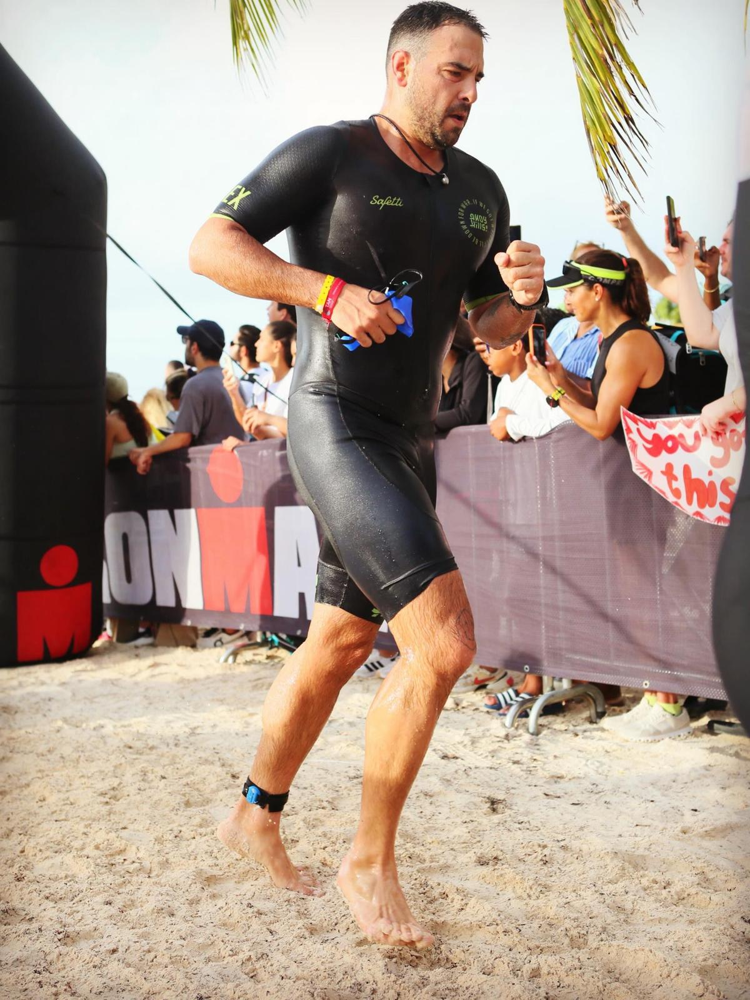

Finance leader with 15+ years across Citi, HSBC, Deloitte, and Bosch — connecting FP&A rigor, risk & control frameworks, and macro analysis to the decisions CFOs actually make.
I currently serve as Finance Risk & Control Sr. Manager (SVP) at Citi México / Banamex, overseeing financial governance, SOX/ICFR compliance for IPO readiness, and executive reporting — acting as strategic partner to finance senior leadership and audit stakeholders.
Earlier I led Finance Transformation at Deloitte México, advising CFO offices across banking, insurance, manufacturing, and pharma — generating MXN $10M+ in consulting revenue. Before that, I owned FP&A for HSBC México's RBWM segment (~MXN $85B portfolio) and built competitive intelligence at Bosch GmbH in Germany.
MBA from Offenburg University (Germany), Corporate Finance certificate from Columbia Business School, Diplomado en Riesgos Corporativos from ITAM. Ironman 70.3 finisher — because endurance is also a professional skill.
Budgeting, rolling forecasts, P&L modeling, NPV/IRR/ROI/CLV, variance analysis, scenario planning, ALCO inputs.
Tableau (Advanced), Cognos TM1, Excel (Advanced), executive dashboards, management reporting, KPI frameworks for CFO offices.
SOX 302 & 404, COSO, ICFR, financial statement risk, operational risk KRIs, regulatory compliance, IPO readiness.
Ironman 70.3 finisher (Cap Cana 2026). Safari expeditions across Kenya, Uganda, and the Serengeti. The discipline of endurance sport and the perspective of exploration shape how I approach complex problems — with patience, preparation, and long-term thinking.

Open to conversations on FP&A leadership, strategic finance, transformation, and senior finance roles — in Mexico or internationally.